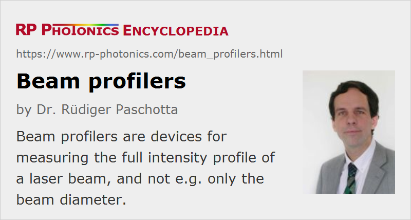

Beam Profilers
Definition: devices for measuring the intensity profile of a laser beam
More general term: optical metrology instruments
German: Strahlprofil-Messgeräte
Categories: photonic devices, light detection and characterization, vision, displays and imaging, optical metrology
How to cite the article; suggest additional literature
Author: Dr. Rüdiger Paschotta
A beam profiler (beam analyzer, mode profiler) is a diagnostic device for laser beam characterization which can measure the whole optical intensity profile of a laser beam, i.e., not only the beam radius but also the detailed shape.
Beam profilers are used in various ways; a qualitative impression of a beam profile can help during alignment of a laser, whereas measurements of the beam radius at different locations along the beam axis (the caustic) allow one to calculate the M2 factor or the beam parameter product, quantitatively characterizing the beam quality.
Beam quality monitoring with appropriate laser beam diagnostics can be important for many laser applications such as material processing; the quality of drilled holes, e.g., may be achieved more consistently if the beam quality is monitored.
Camera-based Beam Profilers
Many beam profilers are based on some type of digitizing camera. For the visible and near-infrared spectral region, CMOS and CCD cameras are the most common. CMOS devices are less expensive, but CCDs generally have a better linearity and lower noise. A resolution (given by the pixel size) of the order of 5 μm is possible with both CCDs and CMOS cameras, so that the beam radius may be as small as 50 μm or even less. The active area may have dimensions up to several millimeters, so that very large beams can be handled.
Different wavelength regions require different sensor types. Silicon-based sensors are a good choice for wavelengths in the visible and near-infrared spectral region up to roughly 1 or 1.1 μm, whereas InGaAs-based detectors can be used up to ≈ 1.7 μm. For still longer wavelengths, e.g. for the beam characterization of CO2 lasers, pyroelectric and microbolometer infrared cameras are suitable. These are fairly expensive. Their comparatively low responsivity may not be a disadvantage, given the high output power of such lasers. For ultraviolet lasers, CCD and CMOS arrays can be used in conjunction with UV conversion plates, converting the radiation to longer wavelengths which do not damage the arrays.
The spatial resolution of a camera sensor is an important quantity. With silicon sensors, pixel sizes well below 10 μm are possible, allowing to measure beam diameters down to the order of 50 μm. InGaAs detectors have substantially larger pixels with a width of e.g. 30 μm, whereas pyroelectric arrays don't get far below 100 μm. The consequence of a low spatial resolution is that the beam sizes have to be kept large, which also leads to a long Rayleigh length. For that reason, more space is required for a complete M2 measurement. The number of pixels is also of practical importance; a larger number allows one to measure beam diameters in a larger range.
When used with narrow-linewidth laser radiation, camera-based systems are particularly sensitive to artifacts caused by the high temporal coherence. A careful optical design (without windows, causing parasitic reflections) is required for suppressing such artifacts and/or for eliminating their effects on the measured data.
Most cameras are very light sensitive – often much more than required. The laser beam then has to be attenuated (see below) before hitting the camera. Some imaging optics (e.g. beam expanders or beam reducers for expanding the range of allowed beam radii) may also be used, so that the camera records a beam profile as it occurs at some other location (the imaged plane). This also allows good shielding against ambient light. However, the optics should not, of course, introduce excessive optical aberrations.
The recorded beam profile may be displayed on a computer screen, possibly together with measured parameters such as beam radius, beam position, ellipticity, and statistical information, or Gaussian fits. The software may allow to select between different methods of determining the beam radius, such as the D4σ method or a simple 1/e2 criterion.
Scanning Beam Profilers Based on Slits, Knife Edges, or Pinholes
There are also beam profilers which scan a beam profile with one or several pinholes, with a slit, or with a knife edge. In any case, some structured mechanical part (which is often fixed on a rotating part) is quickly moved through the beam, while the transmitted power is recorded with a photodetector and some electronics. A computer (a PC or a built-in microprocessor) is used to reconstruct the beam profile from the measured data and to display it on a screen. For example, the transmitted power versus position of a knife edge may essentially be differentiated in order to obtain a one-dimensional intensity profile of the beam, whereas a moving slit directly provides the intensity profile.
The spatial resolution of scanning systems can be as high as a few micrometers, or even close to a single micrometer (particularly for scanning pinholes or slits), suitable for the characterization of small-diameter beams. An important advantage of the concept of scanning is that the photodetector used does not need to have a spatial resolution, so that detectors for very different wavelength regions can easily be used. Also, it is easier to obtain a large dynamic range, compared with, e.g., a camera. The powers which can be handled may range from microwatts to watts. Beam attenuation before the detector is easily achieved, because the required optical quality is much lower than that for a camera system.
Scanning beam profilers, particularly those based on a slit or a knife edge, are most suitable for beam profiles which are not too far from Gaussian, because the recorded signal is usually integrated in one spatial direction, so that the reconstruction of complicated (more structured) beam shapes is not perfect.
Some scanning beam profilers can also be used for pulsed laser beams such as those from Q-switched lasers. However, this works only for high enough pulse repetition rates; note that the minimum repetition rate may depend on the beam diameter.
Important Issues to Observe
Various requirements need to be assessed when selecting a beam profiler for a particular application:
- What is the range of beam radii or diameters to be measured? What is the required accuracy? What definition of beam radius should be used?
- Are the considered beams close to Gaussian, or do they have complicated shapes, such as occur, e.g., in the output of diode bars?
- What is the range of optical powers (often depending on the beam radius)? Is a device with a large dynamic range required, or is it acceptable to work in a narrow range of optical powers? Will an adjustable attenuator be needed?
- Is it most convenient to have a device connected to a PC (or a laptop computer), e.g. via an USB 2.0 cable, or should the device have its own electronics for displaying the results?
- What software features are required? For example, which beam parameters need to be displayed directly? Should the device be able to measure beam parameters reliably in a wide range of beam radii and powers? Are data logging features required?
- Is it necessary that the device can handle beams with temporally varying power, e.g. from Q-switched lasers?
- For complete beam quality characterization: should the device automatically record beam profiles at different locations and calculate the M2 factor?
Beam Attenuation
In many cases – particularly for camera-based systems –, it is necessary first to attenuate the power of a laser beam before sending it into the beam profiler. Some systems use an optical attenuator (e.g. a wedged neutral-density filter) in transmission; the weak reflection e.g. from a high-quality glass plate may also be utilized.
Although attenuation may appear as a trivial task, inappropriate methods can cause a number of problems. Some examples are:
- Some attenuators do not have good optical quality, or can spoil the beam quality of narrow-linewidth beams through interference effects based on reflections from surfaces.
- Particularly absorbing filters can spoil the beam quality at high power levels, where thermal effects occur.
- It is not advisable to use the low residual transmission of a highly reflecting dielectric mirror for beam quality measurements, since the residual transmissivity can depend strongly on the position on the mirror.
- A weak reflection from of an optical surface operated with p polarization near Brewster's angle is often not suitable, since such an operation point has a much higher reflectivity for s polarization and may therefore only show the pattern of depolarization in the laser gain medium rather than the actual beam quality.
- As some methods provide attenuation only in coarse and not adjustable steps, it may be difficult to reach the optimum power level in the detector.
Aspects of convenience may also matter. For example, it is helpful if the electronics can automatically adjust the required attenuation factor.
Suppliers
The RP Photonics Buyer's Guide contains 29 suppliers for beam profilers. Among them:
Questions and Comments from Users
Here you can submit questions and comments. As far as they get accepted by the author, they will appear above this paragraph together with the author’s answer. The author will decide on acceptance based on certain criteria. Essentially, the issue must be of sufficiently broad interest.
Please do not enter personal data here; we would otherwise delete it soon. (See also our privacy declaration.) If you wish to receive personal feedback or consultancy from the author, please contact him e.g. via e-mail.
By submitting the information, you give your consent to the potential publication of your inputs on our website according to our rules. (If you later retract your consent, we will delete those inputs.) As your inputs are first reviewed by the author, they may be published with some delay.
Bibliography
| [1] | ISO Standard 11554, “Optics and photonics – Lasers and laser-related equipment – Test methods for laser beam power, energy and temporal characteristics” |
See also: laser beam characterization, beam quality, beam parameter product, The Photonics Spotlight 2007-04-01, The Photonics Spotlight 2007-06-01
and other articles in the categories photonic devices, light detection and characterization, vision, displays and imaging, optical metrology
|  |
If you like this page, please share the link with your friends and colleagues, e.g. via social media:
These sharing buttons are implemented in a privacy-friendly way!